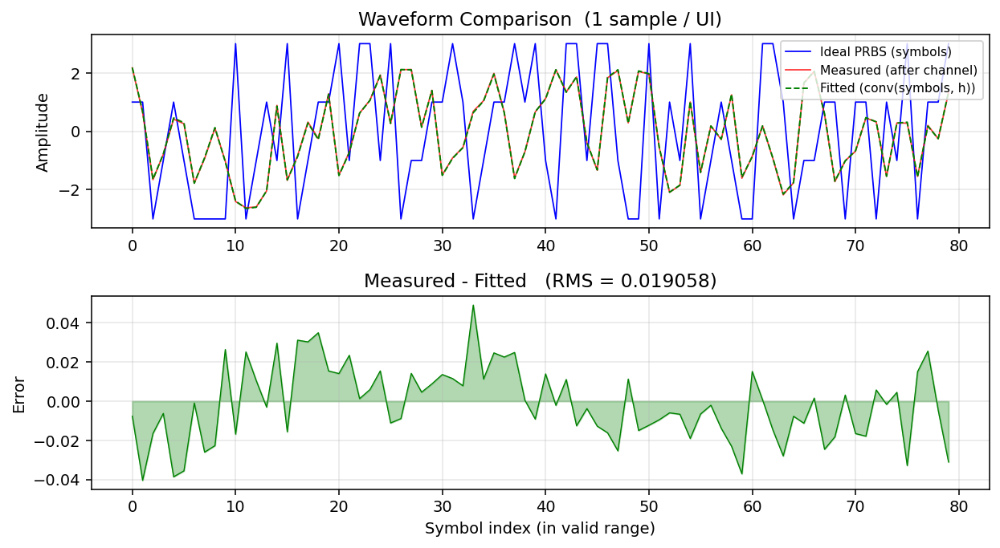
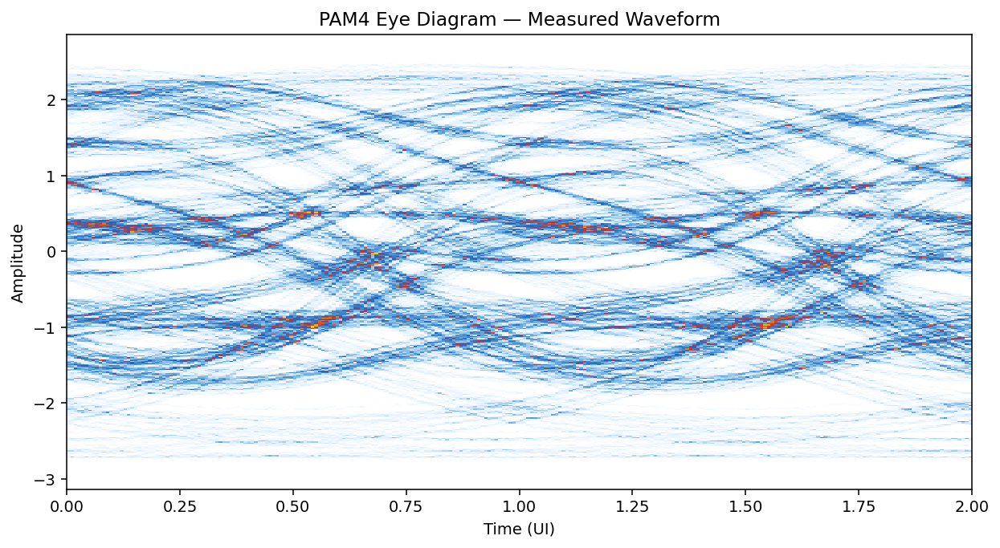
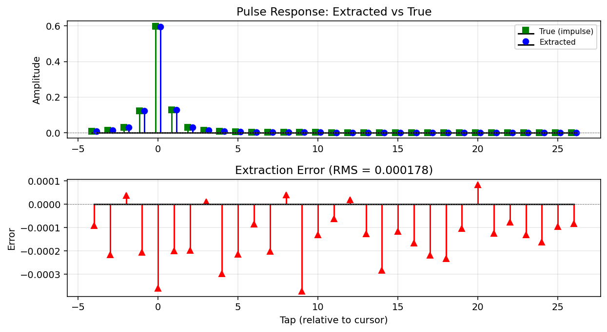
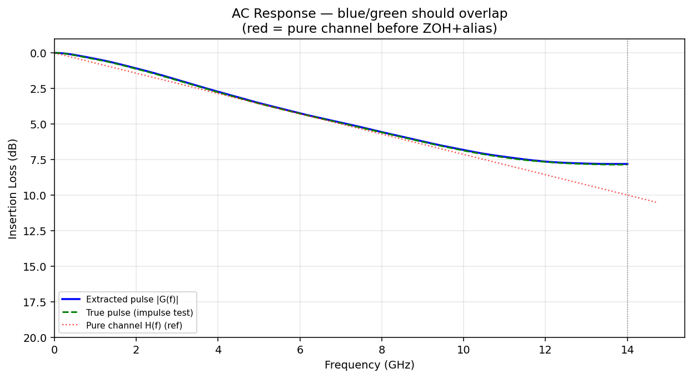

PAM4 Channel Pulse Response Extraction
a[n]（無 ISI）＋ 量測波形 y[n]（有 ISI）求解：channel pulse response
h[k]驗證：
conv(a, h) ≈ y，FFT(h) ≈ channel 頻率響應
完整流程
a[n], 無 ISI
H(f)
y[n], 有 ISI
y = A·h
驗證：conv(a, h) = fitted waveform ≈ measured waveform
頻域：FFT(h) = 系統 AC response
Tab 1: Waveform — 三種波形比較

上圖：三條線分別是什麼
| 顏色 | 名稱 | 來源 | 意義 |
|---|---|---|---|
| 藍 | Ideal PRBS (symbols) | 已知的輸入 pattern a[n] |
完美方波，只有 {-3, -1, +1, +3} 四個值，沒有 ISI |
| 紅 | Measured (after channel) | ideal PRBS 通過 lossy channel 後的波形 | 有 ISI：level 之間的轉換變慢、振幅被壓縮、相鄰 symbol 互相干擾 |
| 綠虛線 | Fitted = conv(symbols, h) | ideal symbols 跟提取的 pulse response 做 convolution | 如果 linear fit 正確，這條線應該跟紅線幾乎完全重疊 |
下圖：Error = Measured − Fitted
看什麼：
- 幅度越小越好：RMS 值顯示在標題
- 應該看起來像白噪音（隨機、無規律）
- 如果有低頻波動 → DC offset 沒 fit 好
- 如果有週期性 → tap 數量不夠
SNDR(meas vs fitted) 應該 ≈ 你設定的 noise SNR。
例：noise SNR = 40 dB → 預期 SNDR ≈ 37~40 dB
Tab 2: Eye Diagram — PAM4 眼圖

看什麼
| 特徵 | 好的眼圖 | 差的眼圖 |
|---|---|---|
| 眼睛開口（垂直） | 大、清晰的三個菱形開口 | 開口小或完全閉合 |
| 眼睛寬度（水平） | 開口寬，佔大部分 UI | 開口窄，只在中心一小段 |
| Level 分離度 | 四個水平 level 清楚分開 | level 模糊、重疊 |
| Crossing 處的散佈 | 集中在同一個時間點 | jitter 大 → 散佈寬 |
| 噪音 | 每個 level 附近的線條集中 | 線條粗、散開 |
繪製方式
- 用 CDR 找到最佳 sampling phase
- 把 oversampled 波形摺疊成 2 UI 為一段
- Cubic 插值到 128 pts/UI（讓曲線平滑）
- 疊在一起畫成 2D density heatmap（白底）
- 顏色越深 = 那個位置通過的 trace 越多
Channel loss 越大 → 眼睛越閉合。ISI 讓不同 symbol transition 的軌跡分散開來。
Tab 3: Pulse Response — 提取的脈衝響應

上圖：Extracted vs True
| 顏色 | 名稱 | 來源 |
|---|---|---|
| 藍 ● | Extracted | Linear fit 解出來的 h[k] |
| 綠 ■ | True (impulse test) | Ground truth：送 impulse 通過同樣 channel 得到的真實 pulse |
看什麼：兩組點應該完全重疊。如果重疊 = linear fit 正確。
每個 tap 的物理意義
| Tap | 名稱 | 意義 | 理想值 |
|---|---|---|---|
| h[cursor] | Main cursor | 當前 symbol 對 output 的貢獻（最大的 tap） | 趨近 1.0（無 loss） |
| h[cursor−1], h[cursor−2] | Pre-cursor | 未來 symbol 對當前 output 的干擾 | 趨近 0（無 ISI） |
| h[cursor+1], h[cursor+2], ... | Post-cursor | 過去 symbol 對當前 output 的干擾 | 趨近 0（無 ISI） |
Channel loss 越大 → cursor 變小、pre/post cursor 變大 → 眼圖越閉合。
下圖：Extraction Error
每個 tap 的 extracted − true 差值。RMS 值越小代表提取越準確。
典型值：RMS < 0.001 表示提取非常準確。
Tab 4: AC Response — 頻率響應

三條線分別代表什麼
| 顏色 | 名稱 | 計算方式 | 包含什麼 |
|---|---|---|---|
| 藍 實線 | Extracted |G(f)| | FFT(h_extracted) |
Channel + ZOH sinc + Aliasing = 1 sps 系統的實際頻率響應 |
| 綠 虛線 | True pulse | FFT(impulse test result) |
同上（ground truth） |
| 紅 點線 | Pure channel H(f) | 直接從你的 IL 設定計算 | 只有 Channel （不含 sinc 和 aliasing） |
如何判讀
- 藍線和綠線重疊 → linear fit 正確！
- 紅線跟藍/綠不同 → 正常！紅線是純 channel，藍/綠包含 ZOH sinc 和 aliasing
為什麼 Extracted ≠ Pure Channel？
信號從 ideal PRBS 到 1 sps 量測波形，經過三個處理：
sinc(f) 衰減
H(f) loss
高頻摺疊
| 效果 | @ Nyquist | 說明 |
|---|---|---|
| (A) 純 Channel | -10.0 dB | 你設定的 |
| (B) ZOH sinc | -3.9 dB | sinc(0.5) = 2/π ≈ 0.637 |
| (C) = A + B | -13.9 dB | 無 aliasing 的預期值 |
| (D) 含 Aliasing | ~-8 dB | 旁瓣能量摺疊回來 → loss 變少 |
k=0 是主要項，k≠0 是 aliasing。sinc 的旁瓣 (sidelobes) 在 1.5×, 2.5× fbaud 處非零， 乘上 channel 後摺疊回基帶。
頻率 (× f_baud) |sinc| 說明
0.0 1.000 DC
0.5 (Nyquist) 0.637 主瓣邊緣
1.0 0.000 零點
1.5 0.212 第1旁瓣 → 摺疊回來！
2.0 0.000 零點
2.5 0.127 第2旁瓣 → 也摺疊回來！Tab 5: Linear Fit — 六張子圖完整解讀

子圖 (1)：Matrix A 熱力圖
是什麼：矩陣 A 的前 50 行，用顏色表示每個元素的值。
- 紅 = +3、 淡紅 = +1、 淡藍 = −1、 深藍 = −3
- X 軸 = column k = tap index
- Y 軸 = row = output sample index
為什麼是斜條紋：每一行是上一行往右 shift 一格 → Toeplitz 結構。
Row i : [a[n], a[n-1], ..., a[n-L+1]]
Row i+1: [a[n+1], a[n], ..., a[n-L+2]]
↑ 整列右移一格看什麼：
- 斜條紋清晰 → 結構正確
- 顏色隨機分布 → PRBS pattern 有良好隨機性
- 如果出現大面積同色塊 → pattern 有長串重複 → cond# 會變差
子圖 (2)：一行範例
是什麼：從矩陣 A 中取出一行（例如 n=2057），畫成 bar chart。
每個 bar 的高度是 a[n-k] 的值。
數學意義：這一行代表一條方程式：
Bar chart 顯示的是紅色部分（已知的 symbol 值）。 h[k] 是我們要求的未知數。
看什麼：值域應該只有 {-3, -1, +1, +3}，分布接近隨機。
子圖 (3)：y vs A·h — 量測值 vs 擬合值
| 線 | 代表 |
|---|---|
| 藍 y | 量測波形（真實值） |
| 紅虛線 A·h+dc | 模型預測值 = 矩陣 A 乘以解出的 h，再加 DC offset |
看什麼：兩條線越重疊越好。
- 完全重疊 → 模型完美解釋數據
- 系統性偏移 → 需要 fit DC offset
- 某些區域偏差大 → tap 不夠或非線性
對應的數學量：
| R² | 意義 |
|---|---|
| 0.9999 | 非常好：99.99% 的 variance 被解釋 |
| 0.999 | 好：可能 tap 不夠或 noise 較大 |
| < 0.99 | 需要檢查 alignment、tap 數量、或非線性問題 |
子圖 (4)：Residual = y − A·h
是什麼：上面圖 (3) 兩條線之間的差值。
- 綠色曲線 = 每個 sample 的 error
- 橘色虛線 = ±RMS 邊界
看什麼：
應該像白噪音 （隨機、無結構）- 如果有週期性 → channel impulse response 比 L taps 更長 → 增加 tap 數量
- 如果有低頻飄移 → 啟用 DC offset fitting
- 如果 amplitude 隨時間變化 → 系統不穩定
SNDR 計算：
子圖 (5)：SVD of A — 奇異值
是什麼：矩陣 A 的所有奇異值 σi，由 SVD 分解得到。
看什麼：
奇異值越 flat（平坦）越好 - Flat = 所有方向的信息量均衡 = well-conditioned = 解穩定
- 如果有驟降 → 那些方向的 h[k] 難以確定 → ill-conditioned
Condition number：
| Cond # | 意義 |
|---|---|
| 1 ~ 3 | 非常好（PRBS 典型值 ≈ 2.2） |
| 10 ~ 100 | 勉強可以 |
| > 1000 | 不可靠，需要 regularization 或換 pattern |
為什麼 PRBS 的 cond# 低？
ATA 的元素 [i,j] = N · Raa[i-j]
= symbols 的自相關
PRBS autocorrelation:
R[0] = E[a²] = 5.0 (PAM4 平均功率)
R[k≠0] ≈ 0 (偽隨機 ≈ 白噪音)
→ ATA ≈ 5N · I (常數 × 單位矩陣)
→ 所有 σi ≈ √(5N)
→ cond ≈ 1子圖 (6)：Summary 文字
右下角的文字框總結整個 linear fit 的結果：
- Model：使用的數學模型
- A 的大小：N × L = 方程式數 × 未知數
- Rank：= L 表示所有 tap 都可被唯一確定
- Cond#：condition number
- Verify row：代回一行驗算，確認 Σ h[k]·a[n-k] ≈ y[n]
- R²、SNDR：最終擬合品質
六張圖的邏輯串連
- 圖(1)：我們建了什麼方程組？→ Toeplitz 矩陣，每行是 symbols 的 shift
- 圖(2)：一條方程式長什麼樣？→ h[k] 乘上哪些 symbol 值
- 圖(3)：解出來準嗎？→ y vs A·h 越重疊越好
- 圖(4)：不準的部分長什麼樣？→ 殘差應該是白噪音
- 圖(5)：方程組穩定嗎？→ flat SVD = 穩定
- 圖(6)：所有數字一覽
Tab 6: Histogram — Level 分佈

看什麼
| 顏色 | 代表 |
|---|---|
| ■ 紅 | 被 classify 到 Level −3 的 samples |
| ■ 橘 | Level −1 |
| ■ 綠 | Level +1 |
| ■ 藍 | Level +3 |
| 灰色虛線 | 估計的四個 level 中心位置 |
看什麼：
四個分佈應該清楚分開 （不重疊）- 各分佈的寬度 = noise + ISI 造成的散佈
- Level 間距應該均等 → RLM ≈ 1.0
- 分佈形狀應接近 Gaussian（中央極限定理）
RLM (Ratio Level Mismatch)：
理想 = 1.0。< 0.9 表示 level 間距不均，可能是非線性問題。
如果分佈重疊嚴重：
- Channel loss 太大 → level 被壓縮
- Noise 太大 → 每個 level 的散佈太寬
- → BER 會很高
數學推導
A. 從摺積到矩陣方程
量測信號是 symbols 和 channel pulse 的摺積：
寫成矩陣形式：y = A · h，其中 A 是 Toeplitz 矩陣。
如果有 N 個 output samples 和 L 個 taps：A 是 N×L，方程組是超定的（N >> L）。
B. Least Squares 求解
Normal Equation：
幾何意義：把 y 投影到 A 的 column space 上。殘差 e = y − Aĥ 垂直於 column space：
C. SVD 解法（數值穩定）
A = U · Σ · VT
ĥ = V · Σ−1 · UT · y
其中 Σ−1 = diag(1/σ₁, 1/σ₂, ..., 1/σ_L)
如果 σ_k 很小 → 1/σ_k 很大 → 放大噪音 → 解不穩定
如果所有 σ_k 差不多大（PRBS 的情況）→ 解非常穩定D. Regularization（正則化）
當 cond# 過大時，加 Tikhonov regularization：
λ > 0 防止 1/σk 爆掉，代價是引入少量 bias。對 PRBS 通常不需要。
E. PRBS 為什麼適合做 Linear Fit
PRBS 的自相關：R[τ] = E[a[n]·a[n+τ]]
PAM4 ({-3,-1,+1,+3}) 的統計：
E[a] = 0 （均值為零）
E[a²] = (9+1+1+9)/4 = 5.0 （功率 = 5）
R[0] = 5.0
R[τ≠0] ≈ 0 （偽隨機序列近似白噪音）
→ ATA ≈ 5N · I （5N 倍的單位矩陣）
→ (ATA)−1 ≈ (1/5N) · I
→ ĥ ≈ (1/5N) · ATy （類似 matched filter）
→ Condition number ≈ 1 （理想情況）GUI 操作指南
啟動
python gui.py滑鼠操作（所有圖表通用）
| 操作 | 效果 |
|---|---|
| 滾輪上 / 下 | 以游標為中心放大 / 縮小 |
| 右鍵拖曳 | 框選區域放大 |
| 右鍵雙擊 | 重置到原始比例 |
驗證 Checklist
| 項目 | 預期 | 不符時的處理 |
|---|---|---|
| R² | ≥ 0.999 | 增加 tap 數量或檢查 alignment |
| SNDR (fit) | ≈ noise SNR | 模型不足或有非線性 |
| Fitted vs Measured | 幾乎重疊 | tap 不夠或 pattern 太短 |
| Pulse: 藍 vs 綠 | 完全重疊 | linear fit 有問題 |
| AC: 藍 vs 綠 | 完全重疊 | 頻域驗證有問題 |
| Condition # | ≈ 2 | pattern 不夠隨機 |
| Residual | 白噪音狀 | 有結構 → 增加 taps |